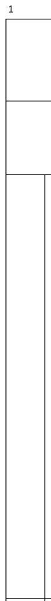

1. Header Right (Required)
header_right.jpg - For frozen header

2. Body Left (Required)
body_left.jpg - For frozen left column

3. Body Right (Required)
body_right.jpg - For main scrollable content

4. Corner (Optional)
corner.jpg - Top-left corner intersection
